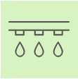

Service
Plant nurseries offer a range of services to gardeners, landscapers, and plant enthusiasts. Here are some common services provided by plant nurseries:
Landscaping
Design: in this nursery offer landscape design services, helping customers plan their outdoor spaces. Installation: assist with planting, hardscaping, and creating garden beds.Lighting
Refer to the use of artificial lighting to support plant growth. While natural sunlight is ideal, artificial lighting becomes necessary in certain situations.Hardscape
Hardscaping in a plant nursery refers to the non-living elements used in landscaping. These features are constructed from hard materials such as stone, concrete, brick, and metal. Here are some common hardscaping elements. Patios, Walkways, Retaining Walls, Decks, PergolasWatering
Watering is a critical aspect of plant care in nurseries. Here are some key points: Root Watering, Lifting Pots, on timing(Early morning and evening), Container Moisture Check
